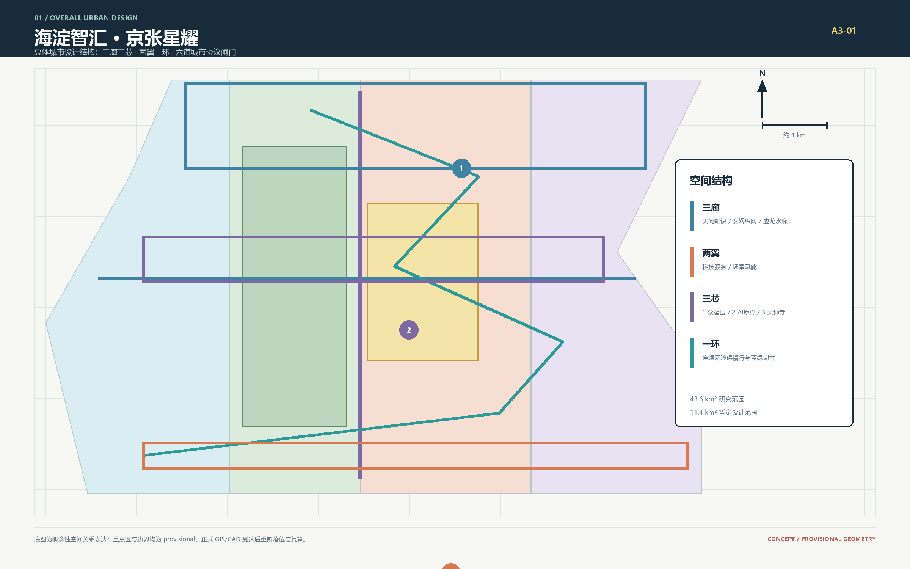
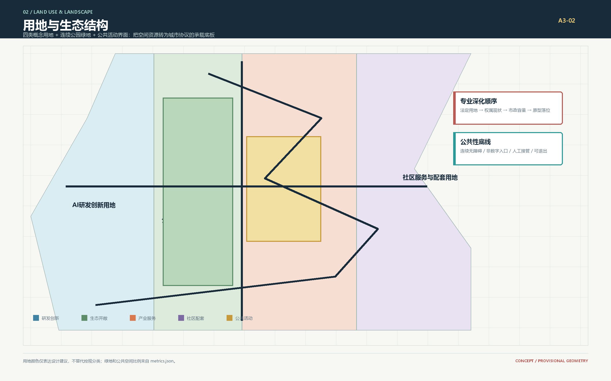
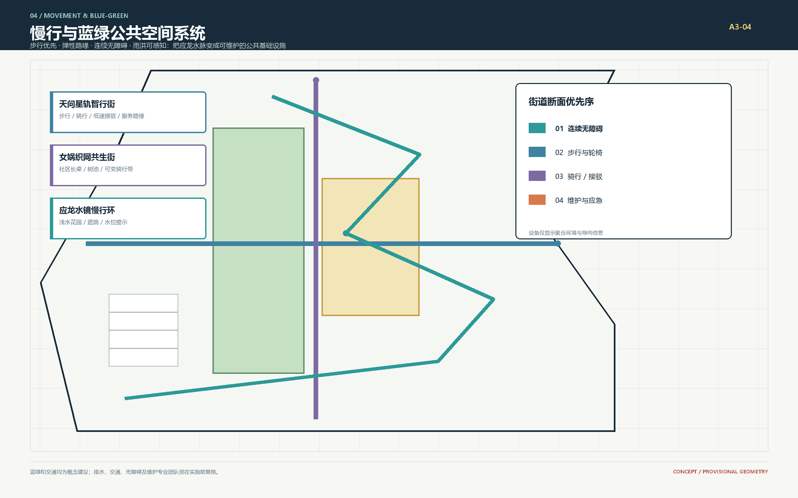
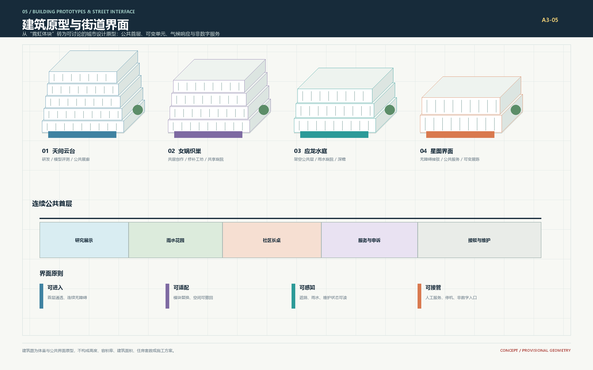
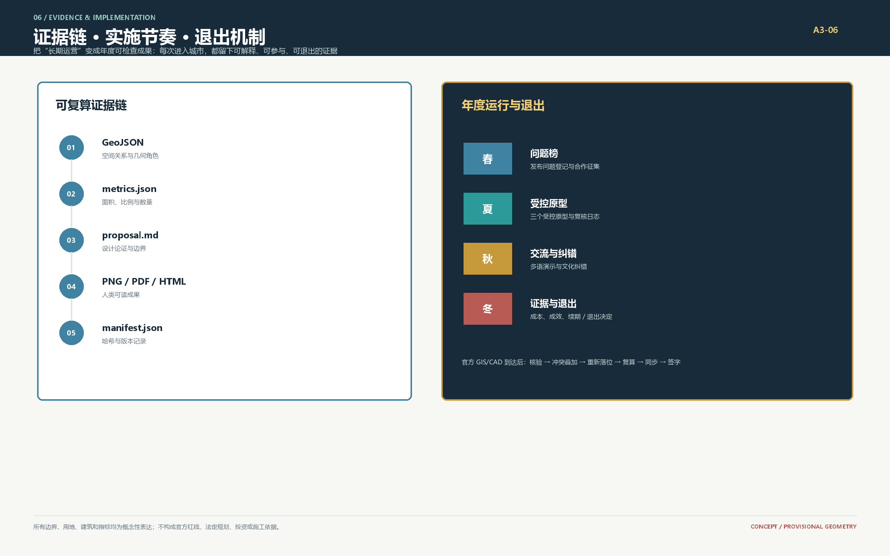

土地 · 空间
暂定范围承载可移动原型；正式 GIS/CAD 到达后复核落位。
以百年京张文脉连接海淀创新基因：天问让知识可解释，女娲让协作可参与，应龙让气候韧性可感知。空间骨架保持“三廊三芯、两翼一环”，新增“天工星图城市协议”，使每项 AI 公共服务都有目的、责任人、公开证据、到期复盘和退出路径。

协议是原创的实施纪律，不是法定规划或政府承诺。未通过任一道门的场景不得扩展。
暂定范围承载可移动原型；正式 GIS/CAD 到达后复核落位。
以公开问题连接研究、创业、专业服务和居民知识。
按需放行，记录授权、责任人、期限与停用条件。
通过 90 日试点验证安全、包容、维护与可退出性。
连接中关村、北纬社区、未来科学城、怀柔科学城、经开区与京津冀协作接口。
用天问、女娲、应龙三廊组织创新、社区、产业与蓝绿网络。
用 90 天试点验证空间原型，达到安全、包容和维护门槛后再扩展。

模型评测台、边端协同演示、安静知识花园。
社区工作坊、AI 素养展、可撤展公共长桌。
产品验证、京张文化体验、雨洪与低碳移动展示。
原始创新、验证转化、人才社区、公共体验、城市韧性形成闭环；用地仅为概念分区。
步行与轮椅、骑行、低速预约接驳、维护和应急通行按明确优先序组织。
接驳、物流、雨洪停留和活动按时段切换，连续无障碍路径不可占用。
雨洪花园、遮荫、微气候提示和慢行网络成为可维护的公共基础设施。

研发、模型评测与公共展廊。
共享庭院、共居创作与修补工坊。
架空公共层、雨水庭院与深檐。
无障碍接驳、公共服务与可变展陈。
更新判断顺序：现状盘点 → 保留维护 → 功能织补 → 节能改造 → 界面开放 → 条件性置换。未取得建筑和权属普查前，不给出拆改留、容积率或高度结论。

安全评测、可解释证据；配人工预约台。
验证、合规和市场转译；配人工服务窗口。
易懂服务、纸质入口和退出权。
教师带领、安全学习、史料审校。
连续无障碍路线与可见服务点。
多语背景、开放贡献与纠错闭环。
可解释 AI 展廊与星图贡献墙。
公共协议共读与居民开发者协作。
京张文化、气候感知与低碳出行接口。
组件库：协议牌、可撤展长桌、人工服务台、低眩光星图导视、雨洪感知节点、贡献版本匣。荣誉展示只收录人工复核且可追溯的开放贡献，不承诺奖项。
用核验时间线讲述交通、工程和公共记忆，不复制历史建筑样式。
把开放研究、创业服务和问题协作转译为空间接口。
以版本、证据、纠错和退出形成可参与的当代城市文化。
发布京张记忆与城市问题登记。
开发者驻留与三项受控原型。
多语演示、国际交流与文化纠错。
公开成本、成效和续期/退出决定。
三层范围、三廊三芯、两翼一环、八要素生态与案例机制转译。
六类用户、十张场景卡、三座地标、六件公共组件与人工接管。
三幕文化叙事、贡献荣誉系统、四季运营和年度退出评估。
正式底板、现状审计、冲突清单、公众基线。
三个 90 天试点、无障碍审计、伦理与维护手册。
三廊连续段、共享接口和年度评估。
依据公开成效扩展、调整或退出。
所有指标均由提交内 GeoJSON 复算，用于概念校验而非法定控制；五项机器可读数值见本页首屏指标带与 metrics.json。

当前官方 GIS/CAD 尚未提供。收到正式数据后依次完成来源与坐标核验、冲突叠加、重点区任务重新落位、指标复算、全成果同步更新和专业签字。官方边界不会因概念构图而修改。
来源：官方公告、项目场地包、智能体任务书、仓库来源注册表、专业规范本地快照。
假设：边界与重点区暂定；控规、权属、现状建筑、市政容量、生态文保与 KPI 基线待确认。
自检状态：结构化数据、图件、双语展示和离线要求按 v1.2 重建；精确面积仍受暂定边界限制。
公众门槛：连续无障碍、非数字入口、人工服务、最小数据、退出与申诉。